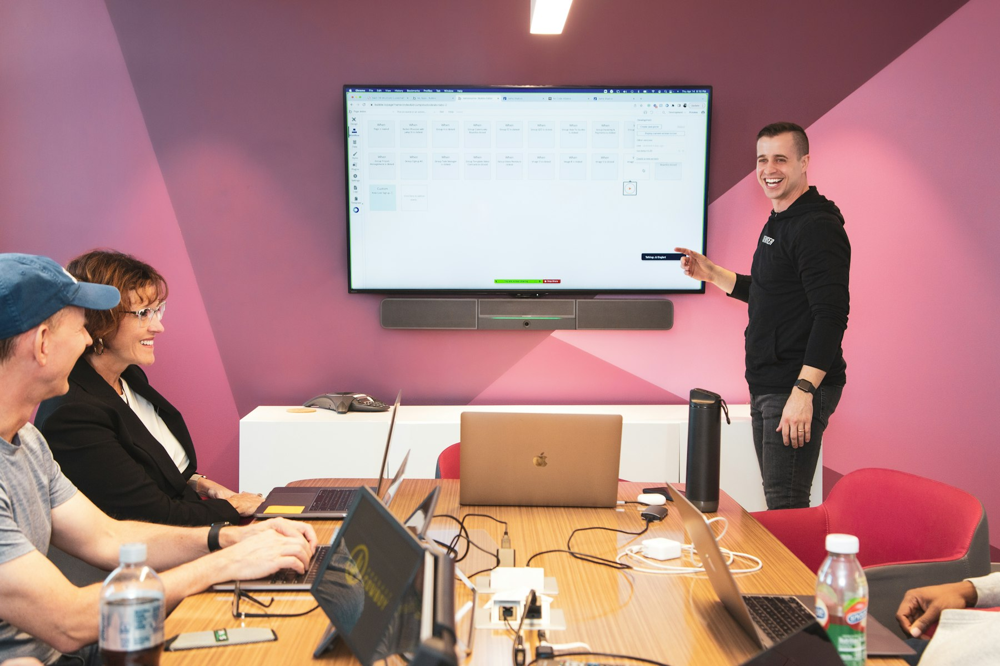

TL;DR
Context switching significantly hampers productivity. Implementing a structured 30-day focus plan with timeboxing and task batching can dramatically improve your ability to maintain attention. Use tools like Trello or Asana for effective task management.
How Busy Professionals Can Achieve Continuous Focus
If you're a busy professional or remote worker, frequent interruptions can drastically reduce your productivity. Context switching, where you shift your attention from one task to another, often leads to wasted time and mental fatigue.
For instance, studies show that it takes around 23 minutes to regain focus after an interruption. Recognizing this, you can implement strategies to maintain a continuous workflow, such as setting clear task boundaries, prioritizing deep work sessions, and usi
Why Common Strategies for Focus Often Fall Short
### Why Common Strategies for Focus Often Fall Short
Many traditional productivity tips, such as “just push through” or “multi-tasking,” often miss the mark as they disregard the way our brains naturally process information.
Research reveals that switch costs—time lost due to shifting focus—can consume up to 40% of a worker's productivity. For instance, consider someone attempting to manage their emails, participate in meetings, and simultaneously tackle a major project.
The constant oscillation between these tasks can mean that each email reply or meeting note takes 20-30% longer than if they had approached each task in isolation.
Moreover, overestimating one’s ability to refocus immediately after an interruption can yield significant setbacks. Studies indicate that once interrupted, it can take an average of 23 minutes to regain full concentration on a task.
When the average worker faces multiple interruptions throughout the day—like unscheduled meetings or persistent notifications—the cumulative time lost can add up to hours over the week.
Take, for example, the scenario of a marketing manager named Lisa. She starts her day intending to work on a campaign report but gets sidetracked by team emails and Slack notifications.
After two hours, she realizes she has only completed the introduction of her report
Implementing a Step-by-Step Workflow to Maintain Focus

### Implementing a Step-by-Step Workflow to Maintain Focus
To effectively reduce context switching, establishing a structured workflow is crucial. Here's a detailed approach: 1. Timeboxing: Allocate dedicated blocks of time for specific tasks. For example, set aside 90 minutes every morning for high-priority projects. Consider using a timer—after 90 minutes, take a 15-minute break to recharge.
If your job permits it, you might find that those uninterrupted periods lead to deeper work and better results. This means you could potentially complete a project in half the usual time, rather than getting fragmented by interruptions. 2. Task Batching: Group similar tasks to streamline your workflow. For instance, reserve one hour every day at 10 AM exclusively for responding to emails. This allows you to clear your inbox without the distraction of other tasks. On average, workers spend about 28% of their workweek managing emails; by batching this task, you can save time for more critical responsibilities. 3. Digital Tools: Use apps to your advantage. Tools like Trello can help visually manage tasks, while focus timers such as the Pomodoro Technique break work into intervals (typically 25 minutes) followed by short breaks.
By utilizing these tools, you can track your work sessions and stay accountable to your schedule. If you commit to 4 Pomodoros (2 hours total) focused on a single project, you’ll likely see increased concentration and output. 4. Review Mechanism: At the end of each day, spend 10-15 minutes reviewing completed tasks. This ritual not only keeps you accountable but also provides momentum for the next day. Jot down what was accomplished and highlight any challenges faced. For example, if a task took longer than anticipated, note it for future planning
A Real Transformation: Adopting Focus Techniques in 30 Days
A Real Transformation: Adopting Focus Techniques in 30 Days
Consider the case of Maya, a project manager for a tech startup, who found herself overwhelmed by frequent context switching. Every day, she juggled meetings, emails, and urgent requests, leading her to only complete about 60% of her tasks.
In search of a solution, Maya committed to a focused work strategy over the next 30 days.
In the first week, she assessed her typical workday, identifying her most productive hours—specifically, 9 AM to 11 AM—and set aside these blocks strictly for deep work.
During this time, she turned off notifications, set her email to "do not disturb," and utilized the Pomodoro Technique, working in 25-minute focused bursts followed by 5-minute breaks.
By week two, Maya had also discovered the power of time-blocking. She allocated specific hours for emails and meetings, reserving afternoons for critical project tasks.
This shift resulted in a 25% increase in her productivity, allowing her to complete around 75% of her intended tasks by the end of the second week.
As the third week progressed, Maya saw a significant change. By sticking to a structured schedule, she found herself consistently finishing project components three days ahead of deadlines.
Avoiding Common Mistakes on Your Productivity Journey
### Avoiding Common Mistakes on Your Productivity Journey
While striving for enhanced focus, many individuals inadvertently trip over fundamental mistakes that hinder their productivity. One prevalent pitfall is over-committing to tasks while neglecting the critical need for mental breaks.
When you fill your schedule to the brim, you may believe you’re maximizing productivity, but studies suggest that taking regular breaks enhances focus and creativity by up to 30%.
For instance, if you’re working on a project for three hours straight without a pause, your efficiency can dwindle significantly after the first hour.
A simple 10-minute break could not only refresh your mind but also improve your overall output.
Moreover, forgetting to reassess your workflow regularly can stunt your growth. Many people stick to outdated methods, feeling comfortable with their routines while their goals evolve.
For example, someone who consistently allocates two hours for email management may find it increasingly ineffective as new communication tools enter the picture.
A realistic shift to a 30-minute daily check-in can free up 1.5 hours for more strategic work. However, this kind of adjustment requires an honest evaluation of your current practices.
Next Steps: Tools and Habits for Long-Term Focus
To sustain focus, you need the right set of tools and habits. Apps like Asana or Todoist can streamline task management while note-taking apps like Notion allow organized data records.
Incorporate daily rituals such as a morning review process to set the day's focus or a block of time for innovative thinking. Establishing such habits prepares your mind for sustained work instead of frequent context switches.
FAQ
What is context switching and how does it affect productivity?
Context switching refers to the act of toggling between different tasks. This shift can lead to significant productivity loss as your brain takes time to reorient itself, causing delays and mental fatigue.
How can I minimize distractions at work?
To minimize distractions, set clear boundaries using tools like Focus Assist on Windows, create a dedicated workspace, and implement techniques like time-blocking to maintain focus on specific tasks.
This article has been reviewed for practical usefulness and is updated whenever new productivity strategies arise.
Turn this into a workflow
Do not stop at ideas. Pick one workflow, test it for 14 days, then keep only what reduces friction.
Search more articles
Find related tools, workflows, and guides.
Photo credits
- Photo 1: ROOQ Boxing via Unsplash
- Photo 2: Kaleidico via Unsplash
- Photo 3: Jj Englert via Unsplash
- Photo 4: Annie Spratt via Unsplash
- Photo 5: sidney zou via Unsplash